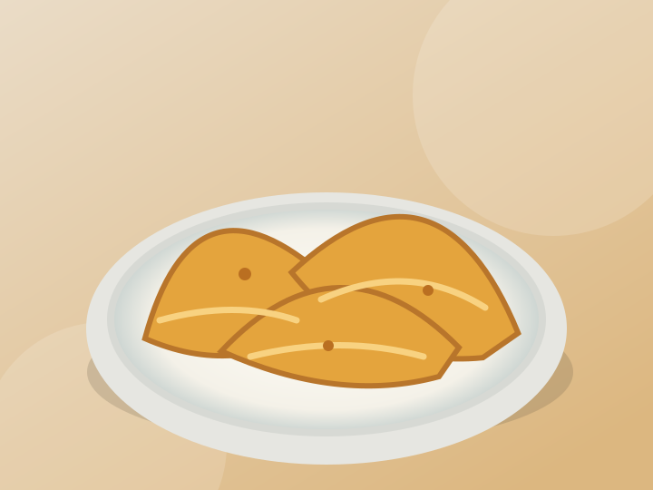

Бууз хийх уламжлалт жор
Амт чанартай шүүслэг бууз хийх уламжлалт арга. Шинэ сайн чанарын хонь эсвэл үхрийн махыг сонгон сонгино, сармисаар амталж чимхэнэ.
Нүүр / Жорын жагсаалт
ХООЛНЫ СОЁЛ
Та дуртай хоолны ангиллаа сонгон орц найрлага болон хийх дараалалтай танилцаарай.
Амт чанартай шүүслэг бууз хийх уламжлалт арга. Шинэ сайн чанарын хонь эсвэл үхрийн махыг сонгон сонгино, сармисаар амталж чимхэнэ.

Биеийг дулаацуулж, дархлаа дэмжих амттай шөл. Чанартай ястай махыг удаан чанаж шүүсийг нь гаргаад ногоогоор баяжуулна.

Амталсан татсан махаар гуриланд битүүмжлэн халуун тосонд шаргалттал шардаг амттай хоол.

Гар сунгасан гурилыг уураар жигнэж, мах болон төрөл бүрийн ногоотой холин хуурч бэлтгэнэ.

Хонины махыг халуун чулуутай хамт саванд битүү чанаж болгодог нүүдэлчдийн өвөрмөц жор.
Жишиг орцын хэмжээг хэдэн хүнд хийхээс хамааруулж тооцоолно.
JSON мэдээлэл ачаалж байна…